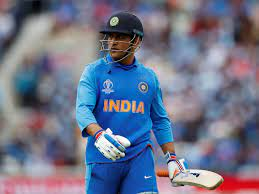

This article is about the cricketer born in 1987. For other uses, see Rohit Sharma (disambiguation).
Rohit Sharma
Rohit Sharma November 2016 (cropped).jpg
Rohit in 2016
Personal information
Full name
Rohit Gurunath Sharma
Born 30 April 1987 (age 35)
Nagpur, Maharashtra, India
Nickname Hitman[1]
Height 1.74 m (5 ft 9 in)
Batting Right-handed
Bowling Right-arm off break
Role Opening batter
International information
National side
India (2007–present)
Test debut (cap 280) 6 November 2013 v West Indies
Last Test 12 March 2022 v Sri Lanka
ODI debut (cap 168) 23 June 2007 v Ireland
Last ODI 24 January 2023 v New Zealand
ODI shirt no. 45 (formerly 77)
T20I debut (cap 17) 19 September 2007 v England
Last T20I 10 November 2022 v England
T20I shirt no. 45 (formerly 77)
Domestic team information
Years Team
2006/07–present Mumbai
2008–2010 Deccan Chargers (squad no. 45)
2011–present Mumbai Indians (squad no. 45)
Career statistics
Competition Test ODI T20I FC
Matches 45 241 148 106
Runs scored 3,137 9,782 3,853 8,123
Batting average 46.13 48.91 31.32 54.15
100s/50s 8/14 30/48 4/29 25/34
Top score 212 264 118 309*
Balls bowled 383 593 68 2,153
Wickets 2 8 1 24
Bowling average 112.00 64.37 113.00 48.08
5 wickets in innings 0 0 0 0
10 wickets in match 0 0 0 0
Best bowling 1/26 2/27 1/22 4/41
Catches/stumpings 49/– 85/– 58/- 93/-
Medal record
Men's Cricket
Representing India
T20 World Cup
Winner 2007 South Africa
Runner-up 2014 Bangladesh
ICC World Test Championship
Runner-up 2021 England(Final)
Source: ESPNcricinfo, 24 January 2023
Rohit Gurunath Sharma (born 30 April 1987) is an Indian international cricketer and the current captain of the Indian cricket team. Considered as one of the best opening batters of all time,[2] Rohit is known for his timing, elegance, six-hiting abilities and leadership skills. He plays as a right-handed batsman for India national cricket team in international cricket, Mumbai Indians in IPL and for Mumbai in domestic cricket. Rohit also captains Mumbai Indians and the team has won 5 titles under his leadership, the most by any team.
Sharma currently holds the world record for the highest individual score (264) in a One Day International (ODI) match and is the only player to have scored three double-centuries in ODIs and also holds the record for scoring most hundreds (five) in a single Cricket World Cup, for which he won the ICC Men's ODI Cricketer of the Year award in 2019. Sharma has received two national honours, the Arjuna Award in 2015 and the prestigious Major Dhyan Chand Khel Ratna in 2020.
Outside cricket, Sharma is an active supporter of animal welfare campaigns. He is the official Rhino Ambassador for WWF-India and is a member of People for the Ethical Treatment of Animals (PETA). He has worked with PETA in its campaign to raise awareness of the plight of homeless cats and dogs in India.
previous page
next page>>